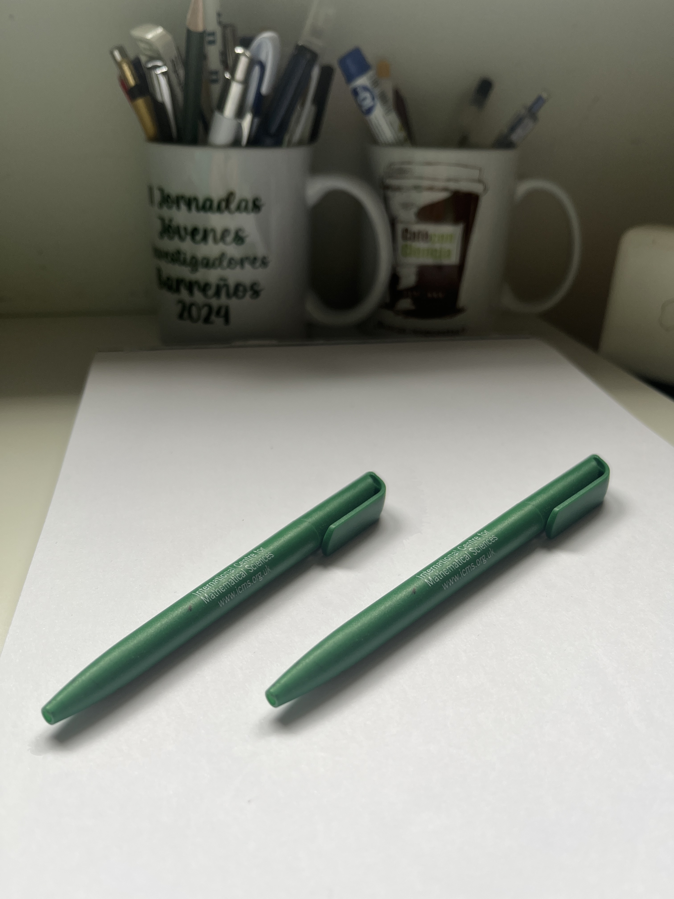

Andalucía no es un día, una medalla, una bandera
Andalucía no es fiesta, capilla, pandereta
No es ir de la casa al tajo, del tajo al catre
Andalucía es cazo y pan, piedra, a piedra.
Andalucía es la de la España y la de los pueblos,
y de a los que en la diáspora se escucha llorar.
Andalucía es mis antepasados, que primero sembraron
Es los padres de mis abuelos, que lo sembrado perdieron
Es mis abuelos, que sembraron de nuevo
Son mis padres, que disfrutando de sombra hicieron marchitar
Soy yo, que solo me quejo,
Son mis hijos, que volverán a sembrar
En Andalucía debe imperar un principio fundamental,
hablando se entiende la gente, creedme, así será.
Hablando, no gritando, hablando, no callando.
Basta de añorar lo que fuimos, basta de cantar nuestro himno sentados.
Andaluces levantaos, sea por nosotros y la humanidad.
